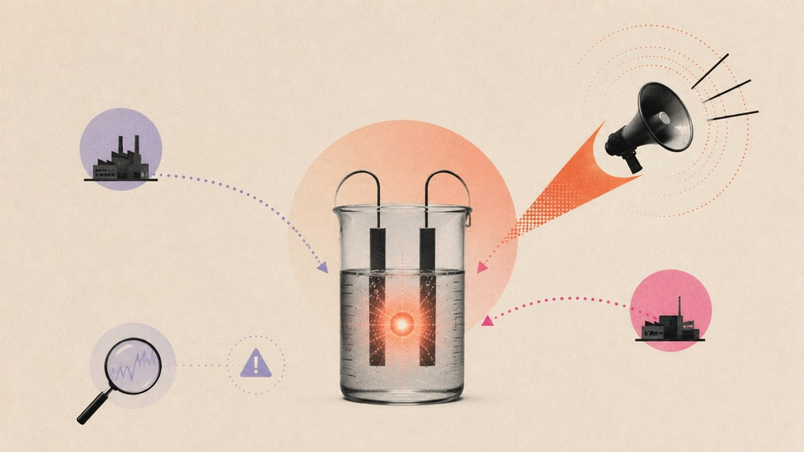

En 1989, deux chercheurs ont cru révolutionner l’énergie mondiale en bâclant une expérience

🛒 En lien avec cet article
Publicité — Liens de partenariat Amazon : une commission peut être reversée, sans surcoût pour vous.
🔥 Top produits tech du moment
Publicité — Liens de partenariat Amazon : une commission peut être reversée, sans surcoût pour vous.
L'intelligence artificielle continue de transformer en profondeur notre quotidien et l'économie. Cette annonce s'inscrit dans une dynamique où les grands acteurs accélèrent leurs investissements et leurs lancements.
Ce qu'il faut retenir
La fusion est la réaction qui a lieu à l’intérieur du Soleil et qui fournit une quantité d’énergie immense.
Pour amorcer cette réaction, il faut atteindre des températures extrêmement élevées : 100 millions de degrés Celsius, ce qui est très complexe sur Terre.
Imaginez l’enthousiasme général lorsque deux équipes de recherche ont annoncé avoir observé une fusion à température ambiante : la promesse d’une énergie illimitée et propre.
Un peu trop beau pour être vrai !
Pourquoi c'est important
Cette information marque une nouvelle étape dans le développement de l'intelligence artificielle. Elle concerne directement les utilisateurs de technologies numériques et mérite d'être suivie de près dans les prochaines semaines. En 1989, deux chercheurs ont cru révolutionner l’énergie mondiale en bâclant une expérience est ainsi un signal à prendre en compte pour comprendre les évolutions du secteur.
En résumé
Retenez l'essentiel : En 1989, deux chercheurs ont cru révolutionner l’énergie mondiale en bâclant une expérience. Cette actualité a été rapportée par Numerama. Nous continuerons de suivre ce sujet et de vous tenir informés des prochaines évolutions.
Source : Numerama